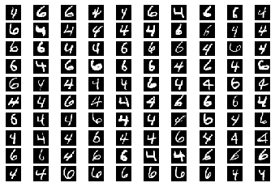

Python Project
Handwritten Numbers Recognition
Winter 2019
Used machine learning algorithms and data analysis to recognize the MNIST dataset of handwritten numbers by using Python libraries such as scikit-learn, NumPy, and Pandas.
PCA allows to build a classifier using fewer features. PCA is essentially a method that reduces the dimension of the feature space in such a way that new variables are orthogonal to each other. PCA captures the most variance possible, this makes the training accuracy attained using histogram is slightly higher than that attained using the Bayesian classifier.
The numerical structure of a single handwritten digit image.

Digits 4 and 6 from training dataset.